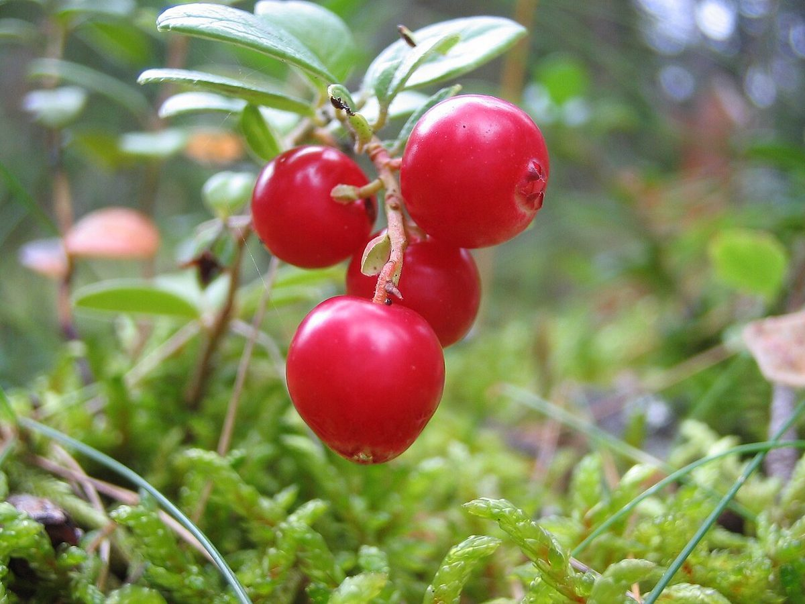
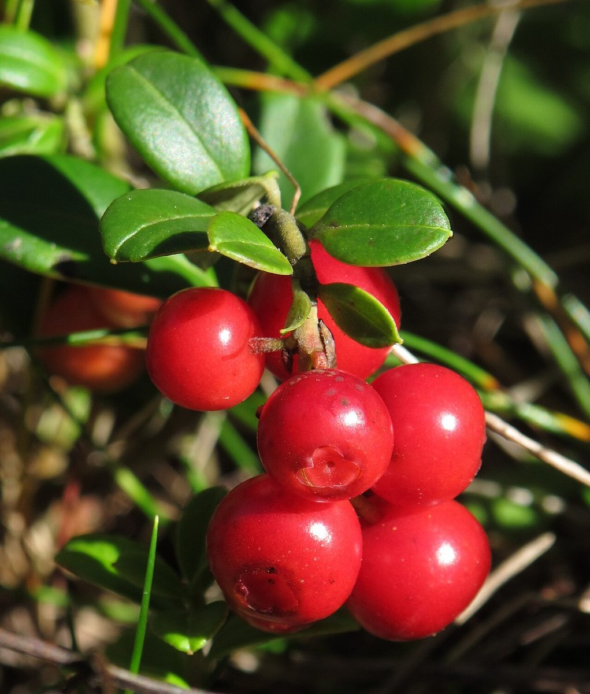

二段目 / 五段
店のこと
お店について確認できているのは、所在地とInstagramのアカウントだけです。
このページの「想像してみる」部分は、制作側が想像して書いたものです。お店の実際の様子・考え・商品とは関係ありません。
確認できていること
- 店名は「FOOTPATH CAKES」、業種はケーキ・焼き菓子の店
- 所在地は兵庫県丹波篠山市福住378(〒669-2513)
- 電話番号はなし。連絡はInstagramから
- 営業時間・定休日・メニュー・価格・ご予約・駐車場は準備中

想像してみる
店名の「道」から
踏み台を一段のぼれば、柵のむこうの道がひらける。
由来は分かりません。制作側は、店名から「歩いていく途中にある場所」を思い浮かべ、このサイトを踏み台の五段に見立てました。この見立ては制作側の連想で、お店の考えとは関係がありません。

